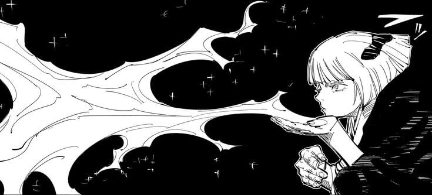

kenjaku: reproductive biologist focused on fetal development
lead researcher since 2001
date of birth: 06-02-1979 (age 44)
department: biological research
current concern: the strange noises coming from the freezer... thinks it may be haunted.
this is mostly centered around the heian era sorcerers of jujutsu kaisen, except they are not sorcerers. i've been spending too much brainpower thinking up all sorts of hilarious situations to put these guys in, which sort of spiraled into a fully fledged mundane alternate universe for them. kenjaku, sukuna, toji, and uraume are drawn by the lovely tojishole on twitter. yuki is drawn by the incredible naihilan_ and yorozu was drawn by the wonderful moddleoddIe on twitter.
links on the birthdays lead to their respective birth charts, because i used to have an astrology phase so i came up with their own mundane canon birthdays that make sense for their personalities. other links lead to art on twitter or songs that correspond with whatever i'm talking about on here.
kenjaku: reproductive biologist focused on fetal development
lead researcher since 2001
date of birth: 06-02-1979 (age 44)
department: biological research
current concern: the strange noises coming from the freezer... thinks it may be haunted.

sukuna: archivist primarily focused on heian era literature
head archivist since 1997
date of birth: 01-01-1977 (age 46)
department: Archives
current concern: who left the stove on yesterday.

uraume: unemployed
long term visitor since 2005
date of birth: [redacted] (age 38)
department: none
current concern: the cafeteria kitchen downstairs ran out of soy...
how to be a good househusband (1792 words) by gojotizm
Fandom: 呪術廻戦 | Jujutsu Kaisen, jjk mundane au
Summary:
Uraume teaches Toji how to cook for Sukuna, since those two are married after all and Sukuna loves a good meal at the end of his busy days.

toji: emergency dispatcher
phone operator since 2018
date of birth: 12-31-1993 (age 30)
department: Emergency Services
current concern: wants to repair his relationship with the lady who owns the boxing club
yorozu: newly hired intern at the archival wing...
intern since 2023
date of birth: 10-24-1989 (age 34)
department: Archives
current concern: Uraume is a Pest.

yuki: boxing coach
personal boxing coach since 2008
date of birth: 02-03-1987 (age 36)
works at: Victory Boxing Gym
current concern: am i Gay????
no photo yet...
gojo: has a new job every week..
a menace to society since 1989
date of birth: 12-07-1989 (age 34)
department: Various.
current concern: no one appreciates his cool Vespa... it's red! and shiny!
no photo yet...
ino: pizza delivery guy
delivering pizza since 2021
date of birth: idk yet (age 21)
works at: pizza hut
current concern: hasn't started thinking about his senior thesis...
no photo yet...
kashimo: senior electrician
zapping things since 2016
date of birth: idk yet (age 36)
works at: Sparky, Inc. (ceo)
current concern: the new hire is not as good as gojo... and never will be.
no photo yet...
jin: park ranger
nature lover since 2013
date of birth: idk yet (age 40)
works at: Lassen Volcanic National Park
current concern: kenjaku's silly 'prank' of the day